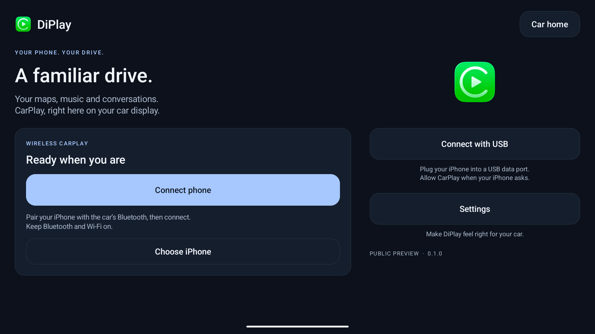
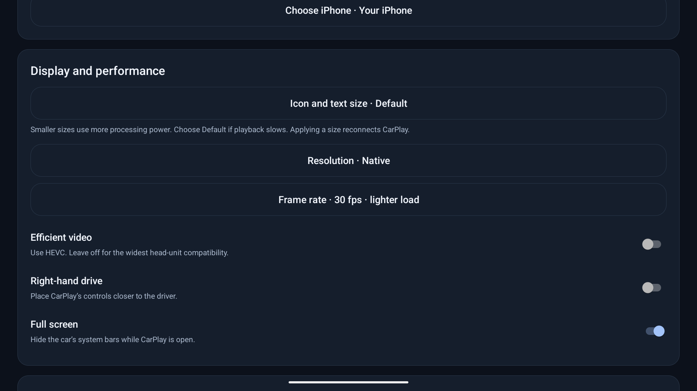

Your iPhone.
Wirelessly at home in your car.
Maps, music, calls, and Siri right on your car display. Mihir CarPlay brings seamless wired and wireless Apple CarPlay with ESP32 Bluetooth / iAP2 hardware bridge support to Android head units.
No jailbreak, subscription, or expensive dongles required.
Install directly on your Android head unit (Android 7.0+ / API 24). Wireless CarPlay supports external ESP32 Bluetooth bridge, car hotspot, and Wi-Fi Direct.
Optimized for Android head units including BYD DiLink and generic Android automotive units.
A familiar drive




Install on your car
- While parked, download the APK and install it on your head unit.
- Open Mihir CarPlay and grant requested Bluetooth, Wi-Fi/location, and microphone permissions.
- Connect your ESP32 board via USB (CP2102 or CH340), or turn on the car's built-in 5 GHz hotspot.
- Pair your iPhone and tap Connect to enjoy seamless wireless CarPlay.
ADB is not required for everyday use. Works with standard Android head units.
Installation & connection help ↗Key Features & Updates
- Integrated ESP32 Bluetooth Bridge: Hardware-assisted iAP2 RFCOMM connection for head units without native Bluetooth RFCOMM.
- Wired USB & Wireless CarPlay: Fast, stable projection with local MFi authentication.
- BYD & Android Head Unit HUD Support: Real-time turn arrows, distance, and street names on instrument cluster displays.
- Smart Hotspot & Wi-Fi Direct: Automatic address discovery and seamless network reconnects.
- Optimized Performance: Smooth 30/60 fps display options, low-latency audio buffering, and configurable resolutions.
Before you try it
An independent open-source preview. Start with 30 fps and standard resolution to test stability on your vehicle display.
Get release updates
Follow project updates and releases on GitHub.
Updates & Releases
New builds and source updates are published directly through GitHub Releases.
Need help or found an issue?
Submit an issue on GitHub with your head unit model, Android version, and iPhone model.
Report an issue ↗ · Create a new issue ↗